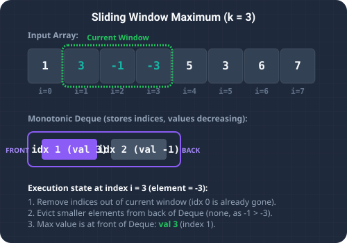

Introduction & Problem Explanation
The Sliding Window Maximum problem is a classic hard problem that asks us to find the
maximum value in each sliding window of size k moving across an array of integers
nums.
Imagine we have an array nums = [1, 3, -1, -3, 5, 3, 6, 7] and a window size k = 3.
The window slides from left to right, one element at a time:
[1, 3, -1]-> Max is3[3, -1, -3]-> Max is3[-1, -3, 5]-> Max is5[-3, 5, 3]-> Max is5[5, 3, 6]-> Max is6[3, 6, 7]-> Max is7
[3, 3, 5, 5, 6, 7].
Solving this problem naively takes O(n * k) by checking all k elements for each of the
n - k + 1 window positions. We want to find an optimized, linear O(n) time complexity
solution using a double-ended queue (Deque).

Imagine a recruiting window for a sports team. Competitors enter a waiting line one by one. If a new, incredibly strong player arrives, any weaker players who arrived before them are immediately disqualified from ever being the "best candidate" because they are both weaker *and* will retire (slide out of the window) sooner. Thus, we discard weaker candidates from the back of our list. Additionally, when a player gets too old (out-of-bounds from the sliding window), they are removed from the front of the list. At any given moment, the absolute best player in the window is always the one sitting at the front of the list.
The Algorithmic Approach
Monotonic Deque Optimization (O(n) Time, O(k) Space)
A double-ended queue (Deque) allows us to add or remove elements from both the front and the back in
O(1) time. We store indices of elements in the Deque, maintaining them in a monotonically
decreasing order of their values.
Here is our step-by-step process for each index i in the array:
- Remove Out-of-Bounds Indices: If the index at the front of the Deque is less than
i - k + 1, it lies outside the current sliding window, so we remove it from the front. - Maintain Monotonic Order: Before inserting the current index
i, we look at the back of the Deque. If the value at the back index is smaller than the current valuenums[i], that back index can never be the maximum in this window or any future window. We pop it from the back. We repeat this until the Deque is empty or the back element is greater than or equal tonums[i]. - Add Current Index: We push the current index
ionto the back of the Deque. - Record Maximum: Once our loop counter
ireaches at leastk - 1(meaning we have processed a full window size), the front of the Deque contains the index of the maximum element for the current window. We recordnums[deque.peekFirst()].
2 * n, resulting in a linear O(n) time complexity.
Step-by-Step Execution Walkthrough
Let's trace the algorithm on nums = [1, 3, -1, -3, 5] with k = 3:
- Step 1 (Initialization): Empty Deque:
dq = [], output array:res = new int[3]. - Step 2 (Index 0: val = 1):
- Deque is empty. Offer index 0.
- Deque state:
[0](values:[1])
- Step 3 (Index 1: val = 3):
- Value at back index (
nums[0] = 1) is less than current3. Pop index 0 from back. - Deque is now empty. Offer index 1.
- Deque state:
[1](values:[3])
- Value at back index (
- Step 4 (Index 2: val = -1):
- Value at back index (
nums[1] = 3) is greater than current-1. No pop. - Offer index 2.
- Deque state:
[1, 2](values:[3, -1]) - Window of size 3 is formed (
i >= 2). Max is at front:nums[1] = 3. - Result state:
res[0] = 3.
- Value at back index (
- Step 5 (Index 3: val = -3):
- Remove out-of-bounds front: index 1 is at
i-k+1 = 3-3+1 = 1, which is in bounds. No removal. - Value at back index (
nums[2] = -1) is greater than-3. No pop. - Offer index 3.
- Deque state:
[1, 2, 3](values:[3, -1, -3]) - Max is at front:
nums[1] = 3. - Result state:
res = [3, 3].
- Remove out-of-bounds front: index 1 is at
- Step 6 (Index 4: val = 5):
- Remove out-of-bounds front: front index is 1. Since
1 < 4 - 3 + 1 = 2, it is out of bounds. Pop 1 from front. Deque is now[2, 3]. - Value at back index (
nums[3] = -3) is less than 5. Pop 3. - Value at next back index (
nums[2] = -1) is less than 5. Pop 2. - Deque is now empty. Offer index 4.
- Deque state:
[4](values:[5]) - Max is at front:
nums[4] = 5. - Result state:
res = [3, 3, 5].
- Remove out-of-bounds front: front index is 1. Since
Key Code Snippets & Explanations
Here is why the main logic in the solution is important:
dq.peekFirst() <= i - k: Keeps the sliding window in bounds by discarding elements that have slid out of range.nums[dq.peekLast()] < nums[i]: Discards smaller elements from the back because they can never become the maximum in a window where a larger, newer element is present.nums[dq.peekFirst()]: The front of the queue is always maintained as the index of the maximum element for the current window.
Java Implementation Code
Below is the complete, self-contained Java source code that solves this problem. It also includes a
main method that traces the execution with console outputs.
package io.practise.dsa;
import java.util.ArrayDeque;
import java.util.Arrays;
import java.util.Deque;
public class SlidingWindowMaximum {
// Monotonic Deque: Time O(N), Space O(K)
public int[] maxSlidingWindow(int[] nums, int k) {
if (nums == null || nums.length == 0 || k <= 0) {
return new int[0];
}
int n = nums.length;
int[] result = new int[n - k + 1];
// Using ArrayDeque for faster performance than LinkedList
Deque<Integer> deque = new ArrayDeque<>();
for (int i = 0; i < n; i++) {
// 1. Remove elements that are out of bounds for the current window
if (!deque.isEmpty() && deque.peekFirst() <= i - k) {
deque.pollFirst();
}
// 2. Remove elements from back that are smaller than the current element
while (!deque.isEmpty() && nums[deque.peekLast()] < nums[i]) {
deque.pollLast();
}
// 3. Add current element's index
deque.offerLast(i);
// 4. If window has reached size k, record the maximum
if (i >= k - 1) {
result[i - k + 1] = nums[deque.peekFirst()];
}
}
return result;
}
public static void main(String[] args) {
SlidingWindowMaximum solver = new SlidingWindowMaximum();
int[] nums = {1, 3, -1, -3, 5, 3, 6, 7};
int k = 3;
System.out.println("--- Sliding Window Maximum Demonstration ---");
System.out.println("Input Array: " + Arrays.toString(nums));
System.out.println("Window Size (k): " + k);
int[] result = solver.maxSlidingWindow(nums, k);
System.out.println("Sliding Window Maximums: " + Arrays.toString(result));
}
}
Conclusion
Using a double-ended queue to maintain a monotonic sequence allows us to solve the Sliding Window Maximum
problem in linear O(n) time. This technique is highly effective for sliding window problems
requiring dynamic range query updates.